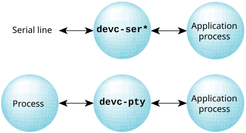

Pseudo terminals are managed by the devc-pty driver.
Command-line arguments to devc-pty specify the number of pseudo terminals to create.
A pseudo terminal (pty) is a pair of character devices: a master device and a worker device. The worker device provides an interface identical to that of a tty device as defined by POSIX. However, while other tty devices represent hardware devices, the worker device instead has another process manipulating it through the master half of the pseudo terminal. That is, anything written on the master device is given to the worker device as input; anything written on the worker device is presented as input to the master device. As a result, pseudo-ttys can be used to connect processes that would otherwise expect to be communicating with a character device.

Ptys are routinely used to create pseudo-terminal interfaces for programs, which uses TCP/IP to provide a terminal session to a remote system.